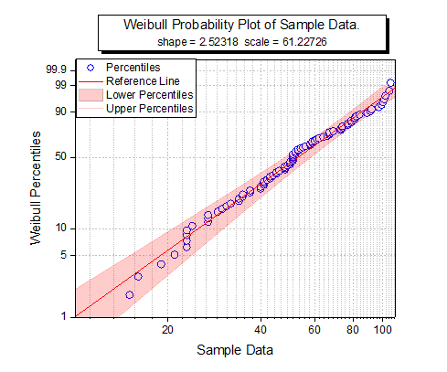

ワイブル確率プロット
Weibull-Probability-Plot
サマリー
確率プロットは、X軸上に観測した累積パーセント、Y軸上に期待累積パーセントを持つグラフを表示します。ワイブルプロットは、データセットがワイブル分布に従うかどうか検査するのに使用されます。そして、そのXスケールとYスケールは、それぞれLog10と2重対数逆数です。すべてのデータポイントが参照線に近い場合、データセットは与えられた分布に従うものと結論付けできます。
- 
学習する項目
- ワイブル確率プロットを作成する方法
- パーセンタイル線の間に色付き面積を追加する方法
ステップ
ラーニングセンターにある、このグラフを参照してください。(ヘルプ：ラーニングセンターメニューを選択、または キーボードのF11
キーを押して、ラーニングセンターを開きます。グラフサンプル：統計グラフを選択し、「weibull」と検索してください。)
- ここからデータをダウンロードしてください。ダウンロードしたtxtファイルをアクティブなワークシートにドラッグ&ドロップします。列Aを選択して右クリックを行い、コンテキストメニューから列XY属性の設定：Y列を選択します。
- この列を選択し、メニューから作図：統計：確率プロット（P-P図）を選択してplot_probダイアログを開きます。このダイアログで、分布をWeibullにし、OKボタンをクリックして、列Aとともにワイブル確率プロットを作成します。
- 下方のパーセンタイルでダブルクリックして、作図の詳細（プロット属性）ダイアログを開きます。グラフの線のタブで、色を赤に、透過率を80%に設定します。
曲線以下の塗りつぶしのチェックボックスにチェックを入れて、ドロップダウンリストから次のデータプロットまで塗りつぶす
- 1色を選択します。
- パターンタブを開き、塗りつぶしを赤にします。線の透過率に準じるのチェックボックスにチェックが入っていることを確認します。
- 上部のパーセンタイルの線のグラフの線タブを開き、色を赤、透過率を80%に設定します。OKをクリックしてこの設定を適用して、ダイアログを閉じます。
- 青色の右Y軸（2本目）上でクリックして、ミニツールバーを表示させます。軸スケールボタン
 をクリックし、軸スケールダイアログを開きます。 軸スケールを10から100に設定し、主目盛の増分値を20とします。
をクリックし、軸スケールダイアログを開きます。 軸スケールを10から100に設定し、主目盛の増分値を20とします。
- 軸スケールダイアログで、垂直方向軸に切り替え、スケールを1から99.99に変更します。OKをクリックしてこの設定を適用して、ダイアログを閉じます。
最終的なグラフは次のようになります。